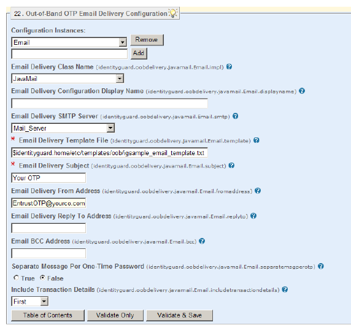

|
IdentityGuard Server 13.0 Administration Guide |
|
IdentityGuard Server 13.0 Administration Guide |
To configure an email OTP service
1. Start the Entrust IdentityGuard Properties Editor. (See Log in or out of the Properties Editor.)
2. On the Table of Contents, click Out-of-Band Email Delivery Configuration.
3. In the empty field below Configuration Instances, enter a unique service name. Click Add.
The pane expands to reveal other properties. Several are required fields.
You can configure more than one email service so that you can provide services for different user groups or languages. Just give each instance a different name.
4. By default, the Email Delivery Class Name property is set to JavaMail. If you plan to use a different email mechanism, select Custom and enter a new class name in the field that appears.

5. Optional. Enter a service name in the Email Delivery Configuration Display Name field. The name appears in the Administration interface and can appear in your client application.
6. In the Email Delivery SMTP Server drop-down list, select the name of the SMTP or SMTP or SMTPS server host name.
This list includes the SMTP servers already defined in SMTP Server Configuration. See To configure an SMTP or SMTPS server for details on setting up SMTP and SMTPS servers.
7. In the Email Delivery Template File field, enter the location of the email message template. (See also Customize the JavaMail out-of-band OTP template.)
8. In the Email Delivery Subject field, enter the text for the subject field of the email.
9. In the Email Delivery From Address field, enter the sender’s email address. Typically, this is an address within your organization.
10. In the Email Delivery Reply To Address field, enter the reply-to email address. Typically, this is an address within your organization that handles customer problems and questions.
11. In Email BCC Address, enter an email address to which to send a blind copy of the OTP email.
12. The Separate Message Per One-Time Password option is used when you are sending multiple OTPs.
● To send all of the OTPs in one email, select False.
● To send each OTP in a separate email, select True.
13. For Include Transaction Details, you select the delivery mode for transaction details generated for delivery with one or more OTPs.
● First — Select First to have the transaction details delivered in the same email as the first OTP. Subsequent emails will each contain only OTPs.
● Separate — Select Separate to have the transaction details sent in the first email, and the OTPs sent in subsequent emails.
● All — Select All to have the transaction details sent in each email sent during the transaction. Each email contains the transaction details and an OTP. The number of emails sent depends on the number of OTPs to be delivered.
14. Click Validate & Save.
15. Log out of the Properties Editor and restart Entrust IdentityGuard and the Radius proxy after you make all property changes.